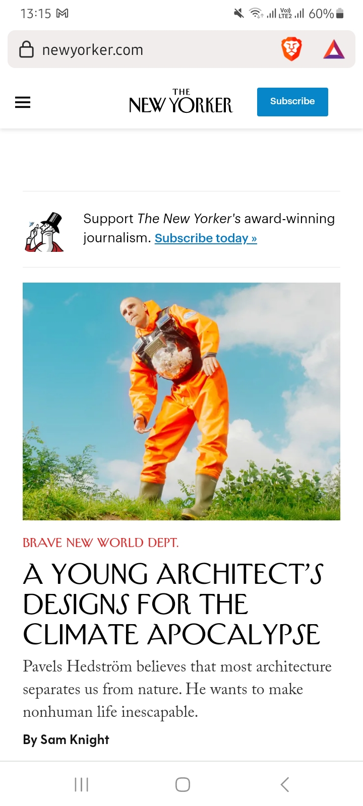
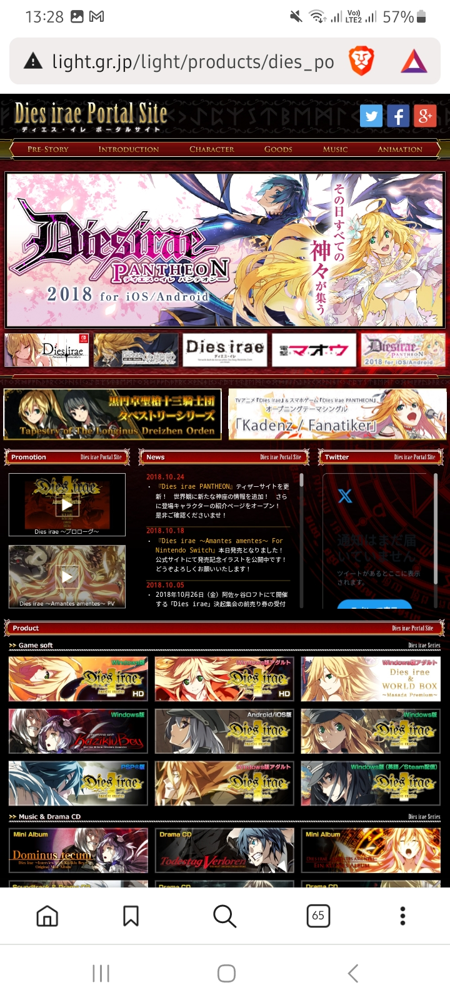

White Space and Clean Design
The New Yorker
The New Yorker makes good use of white space and clean design. It does this by making the white background the most dominant element of the page and supplementing it with the content that is well spaced.
This makes it easier for viewers to navigate and read without getting lost or confused.
PARC: Alignment
Doki Doki Literature Club
This site makes good use of alignment by keeping its elements in a vertical format, thus making it easier to read everything.
This uniform alignment makes it so the eye can easily follow what is displayed on the page.
Hick's Law
Dies Irae
This site is a perfect example of Hick's law because it offers too many options that force the viewer to slow down because they won't know what to pick.